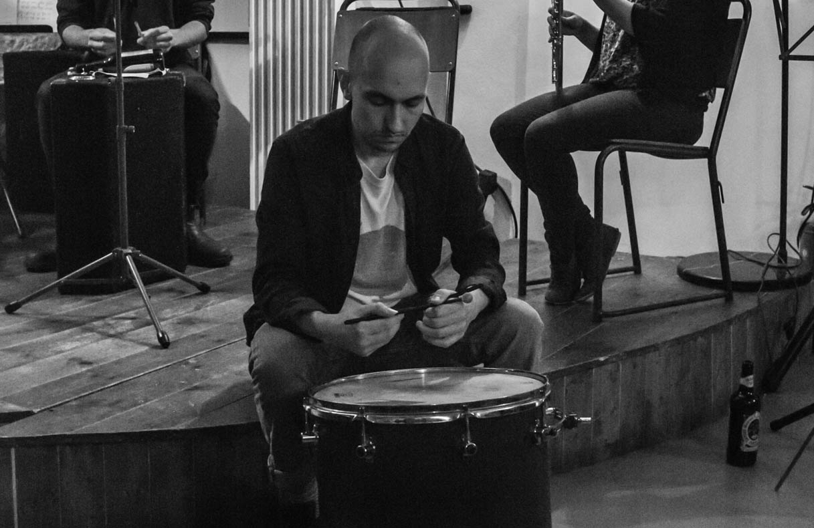

Daniel Bennett

I am a PhD student in Human Computer Interaction, at the University of Bristol. My PhD focuses on quantitative approaches to embodied interaction. I am also interested in the potential to apply complexity methods in HCI, and eudaimonic approaches to user experience - which, in contrast to hedonic approaches focus on meaning and well-being. My current research builds on recent work in cognitive science, attempting to identify modes of tool use, based on signatures in user movement.
My research connects the two strands of my academic background - philosophy and computer science, with my interest in cognitive science. I’m influenced by ideas from phenomenology, enactivism, and ecological psychology, but also in the possibilities of quantitative and computational approaches, and I don’t see the two approaches as in any way incompatible. I believe a rigorous approach to cognitive embodiment, can help drive forward understanding of interaction. Rather than treating interaction as simply the execution of the user’s action plan, it can help us consider the influence of context, other users, and the feedback relationship between user and technology. The computational approaches to embodiment I am investigating go beyond description and may be implemented in code and incorporated into adaptive technologies.
Aside from this, I am a musician, and interested in tools for musical creativity. I have performed at venues around Europe, composed music for theatre and art installations, and I also develop and share software for music making. Before returning to academia, I worked as the ‘Information and Performance Systems Manager’ for a large NHS trust - doing a mixture of database management, project management, BI development & IT strategy.
I have pages on twitter, github, google scholar and I have a newsletter, and an email address